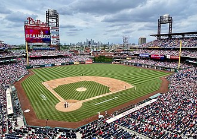
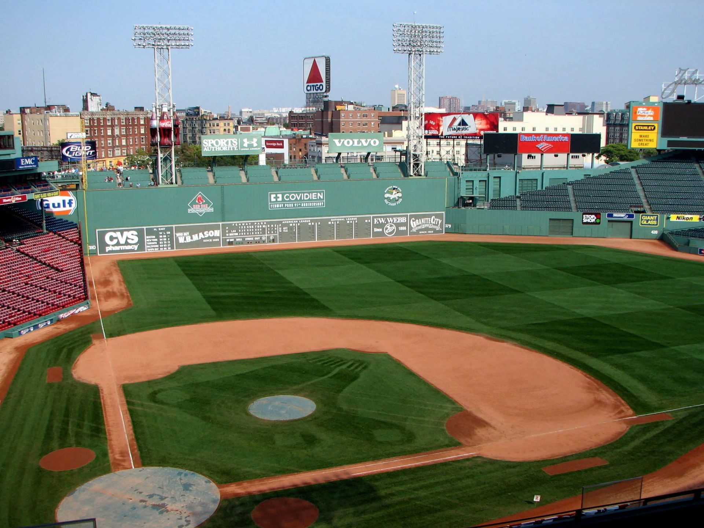
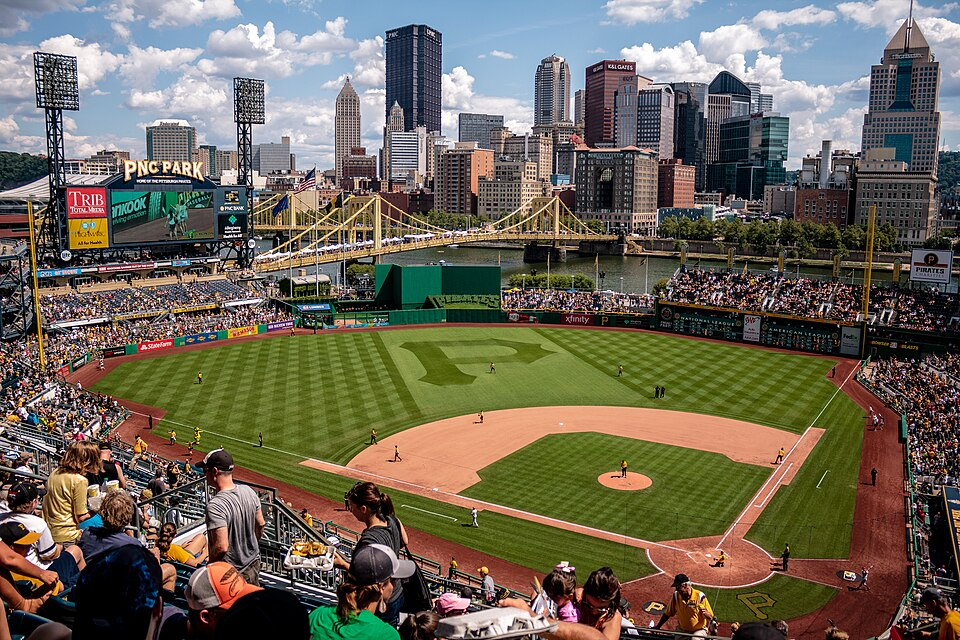

Citizens Bank Park — Home of the Phillies. Great food, amazing atmosphere, and that iconic view of the Philly skyline.
Philadelphia, PA

Fenway Park — Steeped in history, this Boston classic still brings the energy every game day.
Boston, MA

PNC Park — Arguably the most scenic ballpark view in the league. It’s worth the trip for the skyline alone.
Pittsburgh, PA